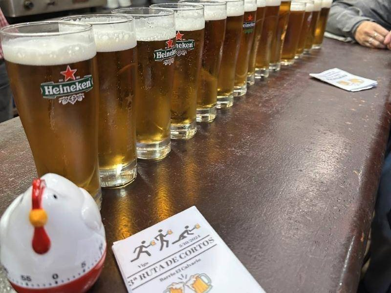

Blog
Que andamos a facer
Obradoiros, catas, feiras, elaboracións e receitas: todo o que se coce (e fermenta) na asociación.

De Pontevedra a Arusha: visitamos Twiga, a primeira cervexaría artesá de Tanzania
Un dos nosos cervexeiros achegouse a Twiga Brewery, en Arusha, a primeira cervexaría artesá de Tanzania. Isto foi o que atopou.

Kimchi caseiro: fermentamos fóra da cervexa
O 3 de marzo puxémonos co kimchi: repolo, rábano branco e chile coreano nun frasco para deixar traballar ás bacterias lácticas.

Feira de Petín 2025
A nosa primeira feira: Petín, o comezo do camiño. Montamos o noso primeiro posto e saímos ao encontro da xente.

Obradoiros de cervexa e outros fermentados: aprende creando
Gústache aprender facendo? Talleres de cervexa, pan, kombucha e salsas fermentadas para todos os niveis.

3ª Ruta de Cortos polo Calvario: Vigo a pequenos grolos
O 5 de outubro de 2024 fixemos a 3ª Ruta de Cortos polo Calvario, en Vigo: vinte bares, cartillas, pegatinas, camisetas e unhas normas moi serias.
Para o día a día, síguenos en Instagram ou subscríbete ao RSS do blog.